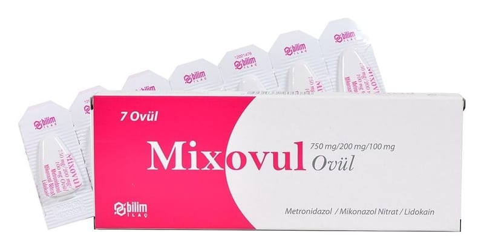

Mixovul 750 mg/200 mg/100 mg Ovül, 7 Ovül

Ne için kullanılır
KT · Bölüm 1• MİXOVUL vajina içine (hazneye) yerleştirilmek suretiyle uygulanan ovül formunda bir üründür. Antibakteriyel (bakterilere karşı etkili), antifungaller (mantar hastalıklarına karşı etkili) olarak adlandırılan ilaç grubuna dahildir. • Beyaza yakın renkli her bir ovül etkin madde olarak 750 mg metronidazol, 200 mg mikonazol nitrat ve 100 mg lidokain içermektedir. MİXOVUL, 7 adet ovül içeren ambalajda kullanıma sunulmaktadır. • MİXOVUL, vajinada (haznede) kaşıntı, yanma, anormal akıntı, şişme ve kızarma gibi belirtilerle seyreden vajina iltihabının (vajinit) tedavisinde kullanılır.
Sayfa 2